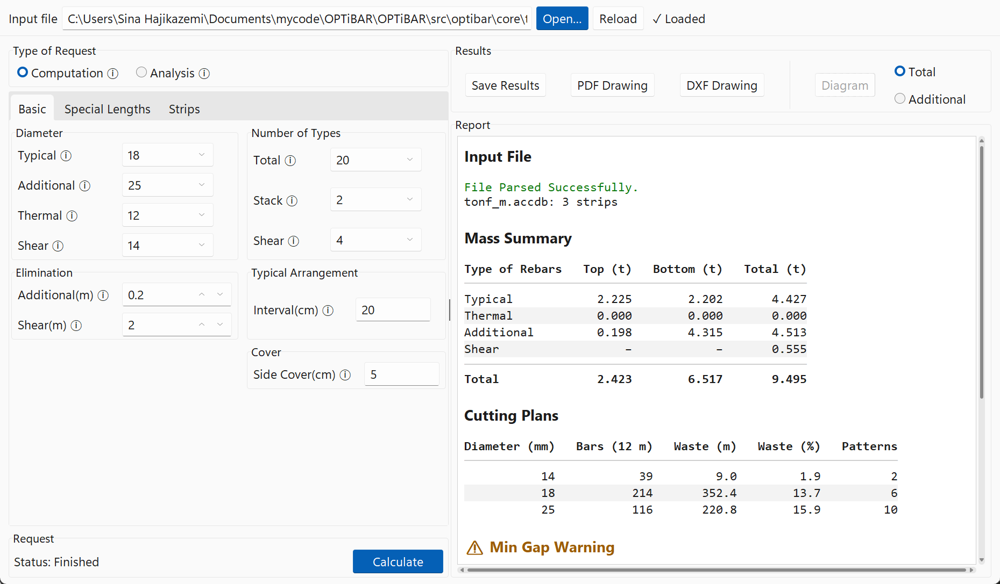
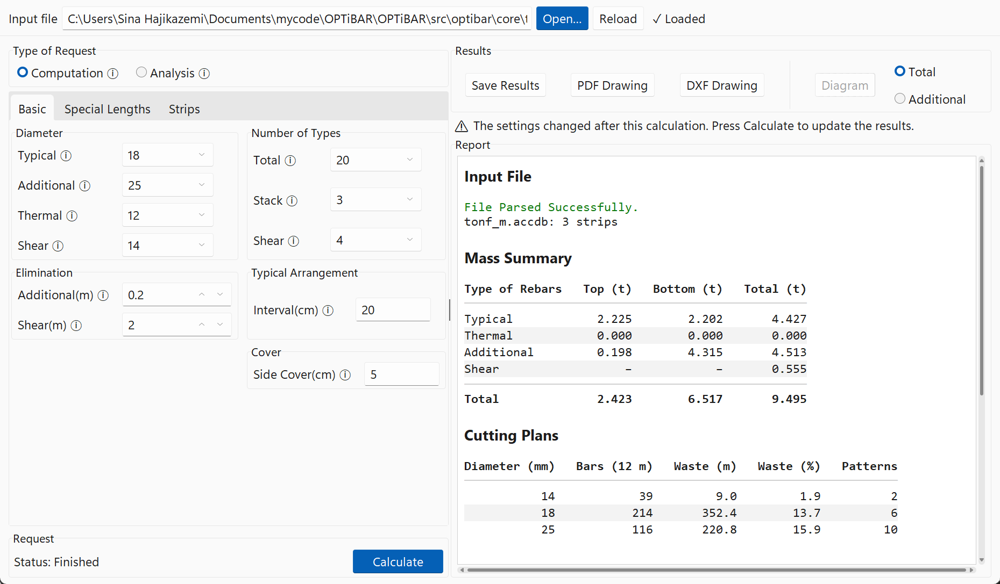

The window#
OPTiBAR has one window: the input file along the top, the settings on the left and the results on the right. The border between the settings and the results can be dragged.

Input file#
Part |
Meaning |
|---|---|
Path |
The Access file that is loaded. |
Open… |
Chooses an Access file ( |
Reload |
Loads the same file again, for example after exporting it from SAFE again. |
Status |
The state of the input file, see below. Click it to scroll the report to the input file. |
Status |
Meaning |
|---|---|
No file loaded |
No file was opened yet. |
Loading… |
The file is being read. |
✓ Loaded |
The file is loaded; the calculation can start. |
⚠ Loaded with … warnings |
The file is loaded, with warnings in the report, for example more than one concrete material. |
✗ Not loaded: a table is missing |
The export doesn’t have a table OPTiBAR needs; the report names it, see SAFE input. |
✗ Not loaded: the file could not be read |
The file is not a SAFE export OPTiBAR can read. |
✗ Access ODBC driver missing |
The Microsoft Access ODBC driver is not installed; the report links to its download page, see Install OPTiBAR. |
Loading a file, or failing to load one, clears the results. Calculate is available only while a file is loaded.
Settings#
The left side holds the Type of Request, the settings in three pages, Basic, Special Lengths and Strips, see Settings, and Calculate. While a calculation runs, Calculate turns into Stop, and the status line and progress bar next to it show its progress.
Results#
The buttons above the report save the results, see Outputs: Save Results, PDF Drawing and DXF Drawing after a computation, and Diagram with Total or Additional after an analysis.
The Report box shows the input file at the top, and the results of the last calculation below it: the mass summary, the cutting plans and the warnings.
When a setting changes after a calculation, a warning above the report says the results are out of date. The results stay readable; press Calculate to update them. The warning goes away when the settings are the same as those of the results again.
